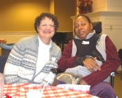
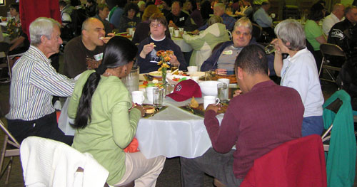

Sunday Evening Celebrations
Visit Events for dates and times of Sunday Evening Celebrations.
“Shared laughter creates a bond of friendship. When people laugh together, they cease to be young and old, teachers and pupils, worker and boss. They become a single group of human beings.”
- W. Lee Grant
Once a month Bridge partners with a local church in hosting a Sunday Evening Celebration. These are gatherings of people with disabilities, their family and caregivers along with volunteers, organizations or church members. The time together provides a safe and dedicated opportunity for the able-bodied and the disabled to create friendships and build relationships to alleviate isolation and enrich lives and connect with the community.
Celebrations, which take place at the host location from 4:00-6:00 include a free dinner, conversation, music, laughter, a spotlight on a selected guest to share their gifts and God’s love in action. All are welcome to attend… and first time guests may feel like a stranger but not for long!
“Meeting someone for the first time
is like going on a treasure hunt.
What wonderful worlds we find in others!”
- Edward L. Ford
If you would like to be placed on our mailing list and/or the phone list to be reminded about upcoming Celebrations, please call our Spiritual Care Coordinator, Denise Aanenson at (425) 885-1006 Ext. 107 or email.
Volunteers are always welcome to help serve, greet guests and make friends!